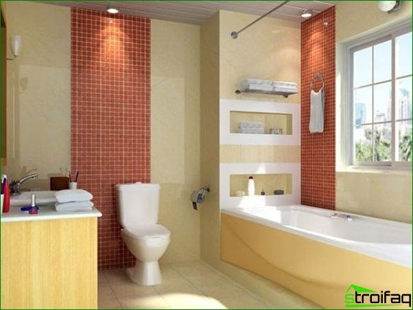
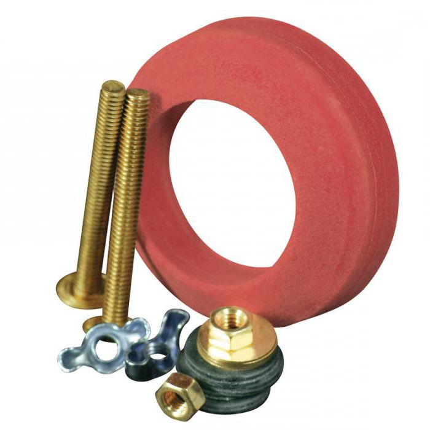
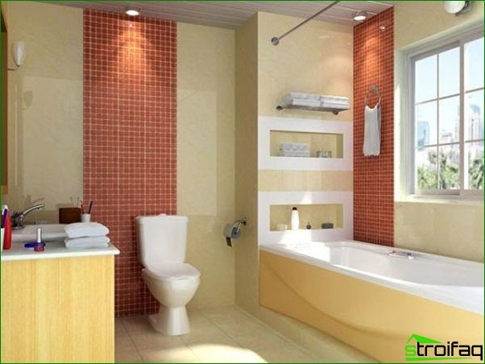
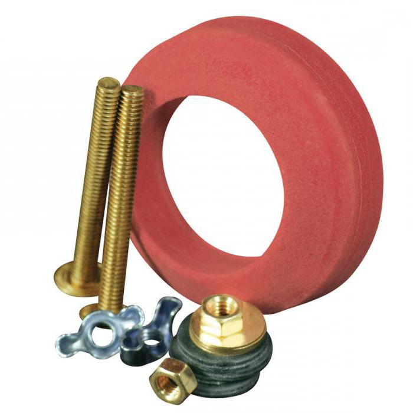

Tualeto dubuo | designremont.club
2020.10.29 08:29

Skip to content
designremont.club
Menu Móda Namas Jedzenie Mados Potraviny Home Namas Tualeto dubuo NamasTualeto dubuo
29.06.2018
Kas dar nėra susipažinęs su šiuo tualeto pavadinimu, mes skubame pranešti, kad tai yra įprastas tualeto indas su mažesniu talpykla. Kodėl mažesnis? Kadangi prieš tai, kai talpyklos buvo aukščiau virš vamzdžio esančio tualeto, jos pakabino nuo virvės, dėl kurios reikėjo traukti, kad nutekėtų vanduo. Manau, kad toks santechnikos stebuklas buvo daugelio iš mūsų.
Laikui bėgant jie pakeitė talpyklų komplektus su tanku kompaktiškesniam (tai yra pavadinimo priežastis). Jų populiarumas iškart pakilo į dangų, ir tai nenuostabu. Pirma, estetiškai, jie yra malonūs, nes viršutinis bakas gali konkrečiai sugadinti vonios kambario dizainą. Antra, atsižvelgiant į matmenis, tualeto dubuo yra daug kuklesnis, todėl galima naudoti laisvą erdvę, kad būtų naudingesnių spintelių ir lentynų, skirtų buitinėms cheminėms medžiagoms laikyti.
Kompaktiškas tualeto dubenys
Šio "sosto" konstrukcijoje yra tokie elementai kaip kanalizacija, dubuo ir sustojimo vožtuvas (drenažo įrenginys). Bokštelis vaidina pagrindą, talpykla yra pritvirtinta varžtais. Ji pati prie grindų pritvirtinta dviem varžtais. Drenažo bakas visada parduodamas kartu su tualetu.
Tualeto drenažo įrenginys yra sunkiau surinkti. Mokymo instrukcija gali nebūti įtraukta, todėl šį momentą geriau išaiškinti iš karto. Prieš pradedant surinkti tualetinį dubenį, įsitikinkite, kad turite visus reikalingus varžtus, gumines juostas, sandariklius ir pan.
Kaip pasirinkti kompaktišką tualetą?
Prieš eidami į santechnikos parduotuvę, nepraleiskite savo vonios kambario matmenų matavimo priemonės. Tai išgelbės jus nuo nusivylimo, jei įsigyjama kompaktinė tualeto kėdė ne tinka jūsų dydžiui.
Kitas, kas verta atkreipti dėmesį? Išleisti tualetą. Šiandien yra keletas variantų:
tualetinis dubuo su įstrižine spauda - šis klausimas yra naudojamas daugumoje Sovietų Sąjungos butų ir modernios statybos. Jei norite suprasti, ar turite nuolydį, ar ne, pažvelkite į kanalizacijos vamzdžio lizdą, jei jis išeina iš grindų kampu, tai yra jūsų atvejis; kompaktiški tualetiniai dubenys su vertikaliu išėjimu yra svarbūs 30-50-iesisiais (vadinamieji "plieniniai") statybai; Tiesioginio išleidimo metu yra daug importuotų tualeto dubenėlių, tačiau jų naudojimas ne visada yra patogus, nes būtent šioje butoje turi būti horizontali varpelio vieta. Tačiau naudojant gofruotę galite įdėti tokius tualetinius dubenėlius ir įprastą nuolydžio kanalizacijos planavimą. Jau nekalbant apie privačių namų statybą, kai jūs galite laisvai sau planuoti visus ryšius.Kitas kompaktiško tualeto dubenio pasirinkimo kriterijus yra vandens veidrodžio vieta. Idealiu atveju, jis turėtų būti labiau kompensuotas į priekinę tualeto dubenėlio sienelę, o nugara turi būti nuolydis, kuris padės jums išgelbėti jus nuo nemalonių purslų, naudodamas tualetą.
Svarbi ir tokia detalė kaip talpyklos lentyna. Šiandien jie yra dviejų tipų - su atskira lentyna ir mesti. Pirmuoju atveju lentyna prie talpyklos pritvirtinama varžtais ir guminėmis tarpinėmis, rezervuaro prijungimas prie tualeto atliekamas naudojant guminę manžetą. Ši parinktis yra labai nepageidaujama, nes esant spaudimui ant talpyklos galite pertraukti tualeto dubenėlio dangtį ir išpilti baką ant grindų. Bet net ir kruopščiai išnaudojus, bakas bus nutekėjęs dėl gumos elastingumo praradimo.
Kitas dalykas yra tualeto dubuo su formavimu lentynoje. Tai monolitinis dizainas ir gali atlaikyti sunkias apkrovas. Jūs įdėjote baką ant lentynos, prisukite varžtus, todėl jūs gaunate patikimą ir patvarią konstrukciją.
Kalbant apie gamintojo pasirinkimą, labai populiarus yra tualeto indai kompaktiški Cersanit (Lenkija), BELBAGNO (Italija), SANTEK (Rusija), JACOB DELAFON (Prancūzija).
Na, ir su tualeto dubenėlio spalva ir jo forma turite nuspręsti pagal savo skonį, taip pat pagal esamą vonios kambario dizainą. Pavyzdžiui, jūs galite sugalvoti juodą kompaktišką tualetinio dubenėlio stačiakampę formą, kuri bus labai originali.
Post navigation
Previous
Previous post:Tom Cruise i Nicole Kidman
Next
Next post:Socialinių konfliktų tipai
Leave a Reply Cancel reply
Categories
Follow us
facebook twitter instagram pinterest 10 labiausiai smirdančių ir brangių sūrių Dlaczego rodzą się dzieci z porażeniem mózgowym? Przyczyny Obliekanie na šťavu a zimu na zimu Jak upiec jabłka w piekarniku z cukrem? Wołowina duszona z pomidorami Malowanie paznokci Systém diéty na zníženie hmotnosti Rupert Grint a jeho priateľka Przygotowanie roślin na zimę Mitä käyttää sininen nilkkurit? Medicininis abortas Kaihtimet WC: ssä Džínové džíny na fleece Deksametazonas injekcijos nėštumo metu Turnip hyödyt ja vasta-aiheet Proč se dítě ptá? Gervuogės vaistinės savybės ir kontraindikacijos Tortas be kakavos mikrobangų krosnelėje Koralų karoliukai Zabavki na zdajy rok Saldus adžika žiemai Sos imbirowy Šaty dlhé tričko Kolor rajstop Playa Sifonki polvipituus mekko Gerard Butler a Morgan Brown Lyhyet sukat Wisiorki w drzwiach Chrípka 2015 Príznaky Przednia ściana pochwy Za oficjalne: Eva Longoria spodziewa się dziecka Kuinka kokata zizus? Kuchnia Kambodży Zapiekanka firmy Apple Starostlivosť o vlasy tipy trihologa pre rôzne typy vlasov Situacinė lyderystė kaip būdas valdyti komandą Očkování proti žluté zimnici Jam iš raguoliuko paprasčiausi ir skanūs saldžių ruošinių receptai Transformator kavč ze stołem Osho meditace za každý den Suolaamot hyvä ja huono Dlaczego kiszona kapusta jest przydatna? Papillomavirusinfektio Banitza su sūriu Lekka deska parkietowa Colin Firthin biografia Megan Fox jako dziecko Vaření v multivariačním režimu Mäso po cvičení Goji marjat resepti laihduttamiseen Aká farba je korek pred dodaním? Neuvostoliiton lastenelokuvia Jennifer Aniston yllätti yleisön käyttäytymistään Oscar-2017: ssä 16 zawodów, które zapadły w zapomnienie Marinuoti melionai žiemai Psykologian tehtävät Osobný život Benedikta Cumberbatcha Lihapallot kaksoiskattilassa Čo kŕmi korytnačkou? Jak sprawdzić baterię? Maskit saunassa laihtuminen Zajímavá fakta o San Marinu Colorotype “pehmeä kesä” Leipäkukka hyvä ja huono Jak se umýt vypálená smaltovaná nádoba? Jak wygląda duch? Jakiego rodzaju zawód jest innowatorem czy jest potrzebny smo współczesnym świecie? Silikoninė liemenėlė Úloha vitamínov v ľudskom živote Urbech iš lino gerai ir blogai Millä on musta nahkatakki? Viljandi Ekotika kailio iš Sati Casanova Blizgučiai nagams Islandija turystyka Rast a ďalšie parametre Jackie Chan Kamštienos padėklas po laminatu privalumai ir trūkumai Pędzel do cieniowania cieni Co je Doppler těhotná? Sirup z Jeruzalema artičok dobré a zlé Ellen Degeneres a Portia de Rossi se rozvedou kvůli muži? Ako si vyrobiť šaty z pareo? Kaip rūpintis akvariumu? Mansikka-likööri herkullisimmat kotitekoiset alkoholi-reseptit Herbata-hybrydowa róża “Madonna” Charlotte na mleku Jak uvařit piknik? Żółwie czerwonobrzuchowate jak określić wiek i płeć? Emättimen sieni Béžové šaty na ples Inšpirácia čo robiť, ak ste stratili svoju inšpiráciu a kde ju hľadať? Lovos galvutė Ką reiškia kairysis alkūnės įbrėžimas? Sea bass on grilli Kakku karhunvärillä eri kotiruokien herkullisia reseptejä Šedé boty na semiš Sukně šortky kdo je vhodný a co nosit? Światowy Dzień Wegański Makiažas pasakos Masáž žaludku pro úbytek hmotnosti https://www.google.com/mymaps/viewer?mid=1xWsp7RlqwZSpEskcAWL_kikd1OugZT29 Close Menu Móda Namas Jedzenie Mados Potraviny CloseRelated Post
Vandens surinkėjas
29 Jun 2018Iškirpti lubos
29 Jun 2018Tamsus parketas
29 Jun 2018Užraktai durelėse pakeitimas: kokiais atvejais reikia, su kuo susisiekti?
29 Jun 2018Naujieji metai 80-ųjų stiliaus
29 Jun 2018Dovana aukle naujiesiems metams
29 Jun 2018Šilumos smūgis simptomai ir gydymas suaugusiesiems
Siūlių lapelis dėl sąnarių skausmo
Kaip gydyti reumatą?
Mastoiditas savybės, simptomai, gydymas, prognozė
Pomponai akyse, plaukai ant nagų ir dar 34 šokiruojančios grožio tendencijos Instagram!
Ar galiu pastoti be orgazmo?
Kaip padaryti skrandžių agaric tinktūros?
Kaip užpulsti krūva suaugusiesiems?
Za maską Sukcesu Rihanna ukrizi miške in moške in macierzyństwie
Menestyksen maski takaa Rihanna piilottaa rakkauden ja äitiyden ajatukset
Kamizelka lisa
Vintage obraz
Copyright All rights reserved | Theme: Infinity News by Themeinwp .
- Dubenys | C&D Style
- Dubenys, dubenėliai | Gerduva.lt
- Kiek tualeto dubenys sveria? - Įranga 2019
- Kaip valyti tualeto dubenį iš akmens
- 11 geriausių tualeto dubenys - Reitingas 2019
- Tualeto dubuo | designremont.club
- Tualeto dubenų valymas - Panelių Gyvenimas - 2020
- Geriausių tualeto dubenių įvertinimas pagal vartotojų ...
- Juodos tualeto dubenys: modernios dizaino tendencijos ...
- 10 geriausių tualeto dubenys Roca - Reitingas 2019
- Dubenys | C&D Style
Geriausių tualeto dubenių įvertinimas pagal vartotojų atsiliepimus. Remontas Ir Nekilnojamasis Turtas May 3, 2018 be tualeto dabar negali padaryti jokios vieną butą.Iš pradžių gali atrodyti, kad šis objektas gali tarnauti amžinai. Bet iš tikrųjų, laikui bėgant tualetas nebeatitinka estetinius reikalavimus.
- Dubenys, dubenėliai | Gerduva.lt
Tualeto dubenys, pagamintos iš dirbtinio ir natūralaus akmens, taip pat stiklo, priklauso prabangos prekėms. Jie turi didelę kainą, tačiau jie turi gražų dizainą ir puikiai tinka interjere Art Nouveau stiliaus. Dirbtinis akmuo ir stiklas yra mažai stiprus, tačiau gaminant tualetinius dubenis šioms medžiagoms pridedami specialūs ...
- Kiek tualeto dubenys sveria? - Įranga 2019
Tualeto indų valymo žingsniai. Išskyrus tuos atvejus, kai tualeto dubenyje yra gilūs ir tamsūs žiedai, valymo tualeto dubenys gali būti greitai ir lengvai. Atlikite šiuos veiksmus, jei norite išvalyti tualetinį indą: Atidarykite langus ir uždėkite apsaugines gumines arba lateksines pirštines. Pasukite tualeto dangtį ir sėdynę.
- Kaip valyti tualeto dubenį iš akmens
Dubenys, dubenėliai Rūšiuoti pagal Pozicija Pavadinimas Kaina Prekės ženklas Rūšiuoti pagal Nustatyti mažėjimo tvarka Rodyti
- 11 geriausių tualeto dubenys - Reitingas 2019
Slapukų naudojimo sąlygos. Naudodamiesi bm.lv svetaine jūs sutinkate su šiomis naudojimo sąlygomis. „TehEksperts Ltd“ imasi visų priemonių, kad užtikrintų maksimalų saugų svetainės naršymą ir apsaugotų kiekvieno vartotojo duomenis.
- Tualeto dubuo | designremont.club
Puodeliai Lėkštės, lėkštutės Dubenys, dubenėliai. Emaliuoti indai Bambukiniai indai Indai serviravimui Indai maistui laikyti Stoveliai virtuvei Indai gėrimams. Stikliniai indai su kraneliu Grafinai, ąsočiai, buteliai Stiklinės, taurės, šiaudeliai. ... Keičiama tualeto šepečio galvutė Metia
- Tualeto dubenų valymas - Panelių Gyvenimas - 2020
Originalaus dizaino dubenys stalo serviravimui. Užeikite į C&D Style internetinę parduotuvę ir įsigykite Jums patinkančius indus.
- Geriausių tualeto dubenių įvertinimas pagal vartotojų ...
Tualeto paaukštinimai mažiausia kaina internetu. Paskubėk, dabar geriausias laikas pirkti...
- Juodos tualeto dubenys: modernios dizaino tendencijos ...
Roca tualetas, kuriam geriau pasirinkti ir pirkti. Pakabinami ir montuojami modeliai „The Gap“, „Dama Senso“, Viktorija, Debba. Geriausi tualetai Roca 2018 - įvertinimas.
- 10 geriausių tualeto dubenys Roca - Reitingas 2019
Juodos tualeto dubenys: modernios dizaino tendencijos Juodasis tualetas ilgai laikomas labai neįprasta tirpalo tualeto interjere, nes jis neatitiko tradicinės santechnikos pasirinkimo sampratos. Tačiau laikui bėgant mados ir įvairių interjero stilių tokia santechnika labai aktualu.
Geriausių tualeto dubenių įvertinimas pagal vartotojų atsiliepimus. Remontas Ir Nekilnojamasis Turtas May 3, 2018 be tualeto dabar negali padaryti jokios vieną butą.Iš pradžių gali atrodyti, kad šis objektas gali tarnauti amžinai. Bet iš tikrųjų, laikui bėgant tualetas nebeatitinka estetinius reikalavimus.
Tualeto dubenys, pagamintos iš dirbtinio ir natūralaus akmens, taip pat stiklo, priklauso prabangos prekėms. Jie turi didelę kainą, tačiau jie turi gražų dizainą ir puikiai tinka interjere Art Nouveau stiliaus. Dirbtinis akmuo ir stiklas yra mažai stiprus, tačiau gaminant tualetinius dubenis šioms medžiagoms pridedami specialūs ...
Tualeto indų valymo žingsniai. Išskyrus tuos atvejus, kai tualeto dubenyje yra gilūs ir tamsūs žiedai, valymo tualeto dubenys gali būti greitai ir lengvai. Atlikite šiuos veiksmus, jei norite išvalyti tualetinį indą: Atidarykite langus ir uždėkite apsaugines gumines arba lateksines pirštines. Pasukite tualeto dangtį ir sėdynę.
Dubenys, dubenėliai Rūšiuoti pagal Pozicija Pavadinimas Kaina Prekės ženklas Rūšiuoti pagal Nustatyti mažėjimo tvarka Rodyti
Slapukų naudojimo sąlygos. Naudodamiesi bm.lv svetaine jūs sutinkate su šiomis naudojimo sąlygomis. „TehEksperts Ltd“ imasi visų priemonių, kad užtikrintų maksimalų saugų svetainės naršymą ir apsaugotų kiekvieno vartotojo duomenis.
Puodeliai Lėkštės, lėkštutės Dubenys, dubenėliai. Emaliuoti indai Bambukiniai indai Indai serviravimui Indai maistui laikyti Stoveliai virtuvei Indai gėrimams. Stikliniai indai su kraneliu Grafinai, ąsočiai, buteliai Stiklinės, taurės, šiaudeliai. ... Keičiama tualeto šepečio galvutė Metia
Originalaus dizaino dubenys stalo serviravimui. Užeikite į C&D Style internetinę parduotuvę ir įsigykite Jums patinkančius indus.
Tualeto paaukštinimai mažiausia kaina internetu. Paskubėk, dabar geriausias laikas pirkti...
Roca tualetas, kuriam geriau pasirinkti ir pirkti. Pakabinami ir montuojami modeliai „The Gap“, „Dama Senso“, Viktorija, Debba. Geriausi tualetai Roca 2018 - įvertinimas.
Juodos tualeto dubenys: modernios dizaino tendencijos Juodasis tualetas ilgai laikomas labai neįprasta tirpalo tualeto interjere, nes jis neatitiko tradicinės santechnikos pasirinkimo sampratos. Tačiau laikui bėgant mados ir įvairių interjero stilių tokia santechnika labai aktualu.
 


